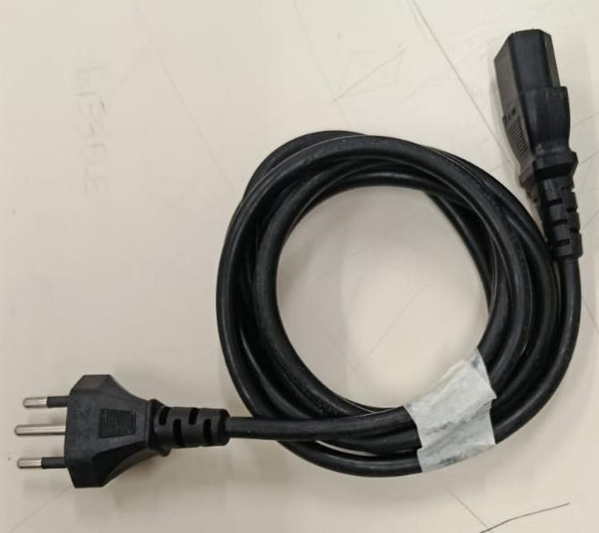
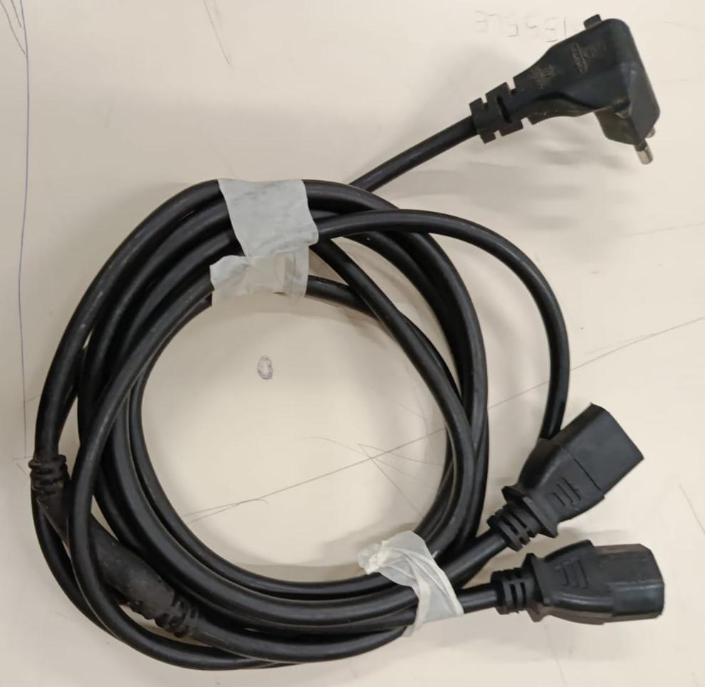
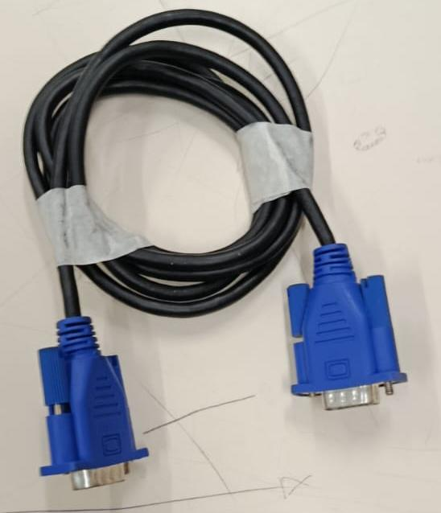
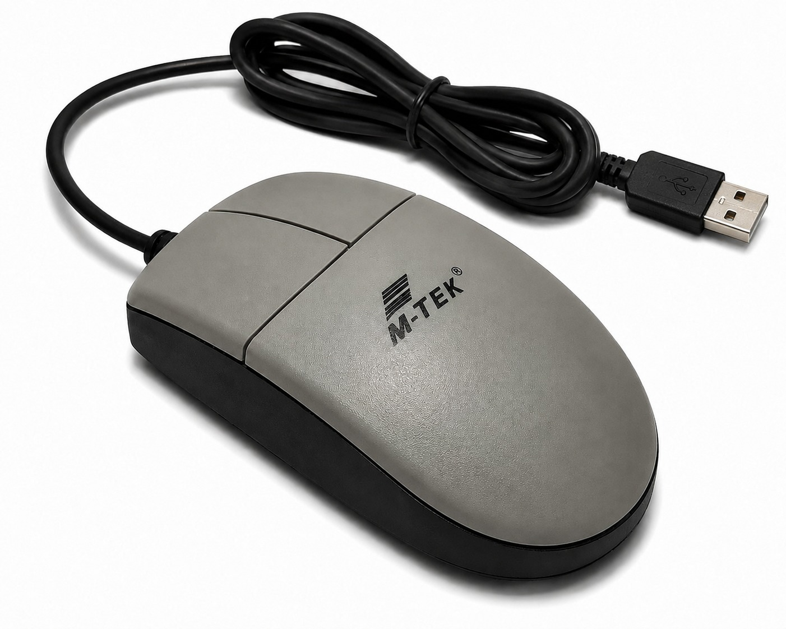
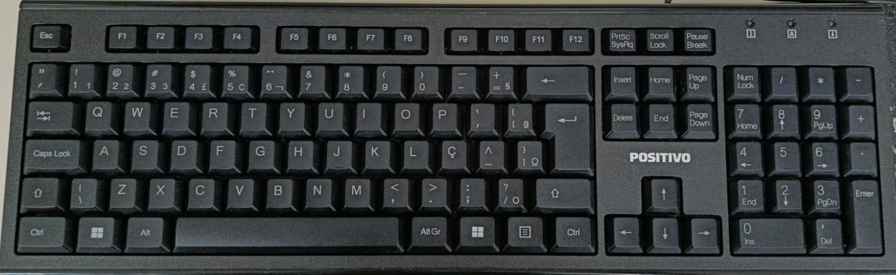
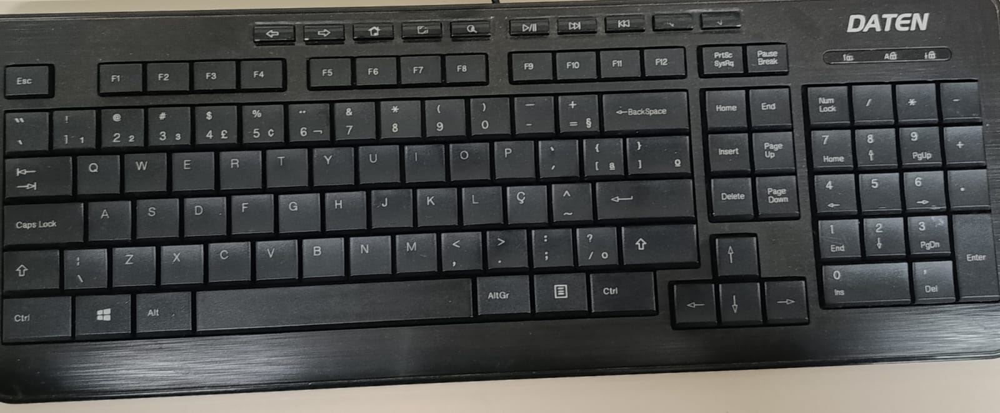
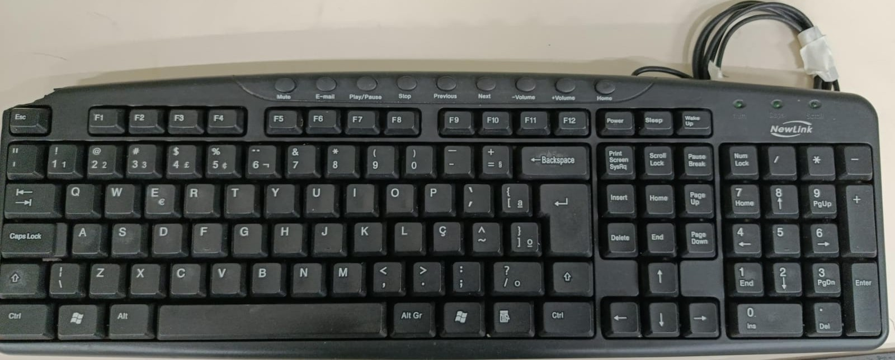

Bem-vindo ao site do Projeto GS!
Aqui você encontrará informações sobre cabos, periféricos e outros equipamentos de informática disponíveis em nossa escola que, apesar de estarem em bom estado de conservação e funcionamento, não estavam sendo utilizados. Neste espaço, apresentamos esses recursos para que possam ser conhecidos e consultados de forma simples e organizada.
Cabos
Força

Cabo de força com entrada simples.

Cabo de força com entrada dupla.
VGA

Cabo de vídeo com entrada vga.
Periféricos
Mouse

Mouse da marca MTek, do modelo Laser, com entrada USB.
Teclado

Teclado da marca Positivo, com entrada USB, do modelo ABNT 2.

Teclado da marca Daten, com entrada USB, do modelo ABNT.

Teclado da marca New Link, com entrada USB, do modelo ABNT.